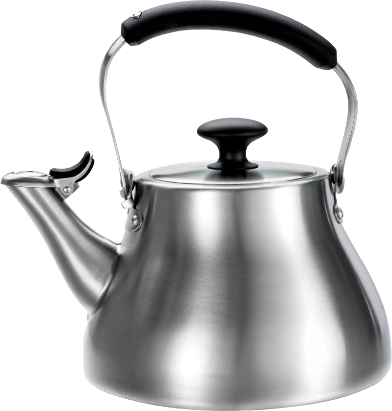
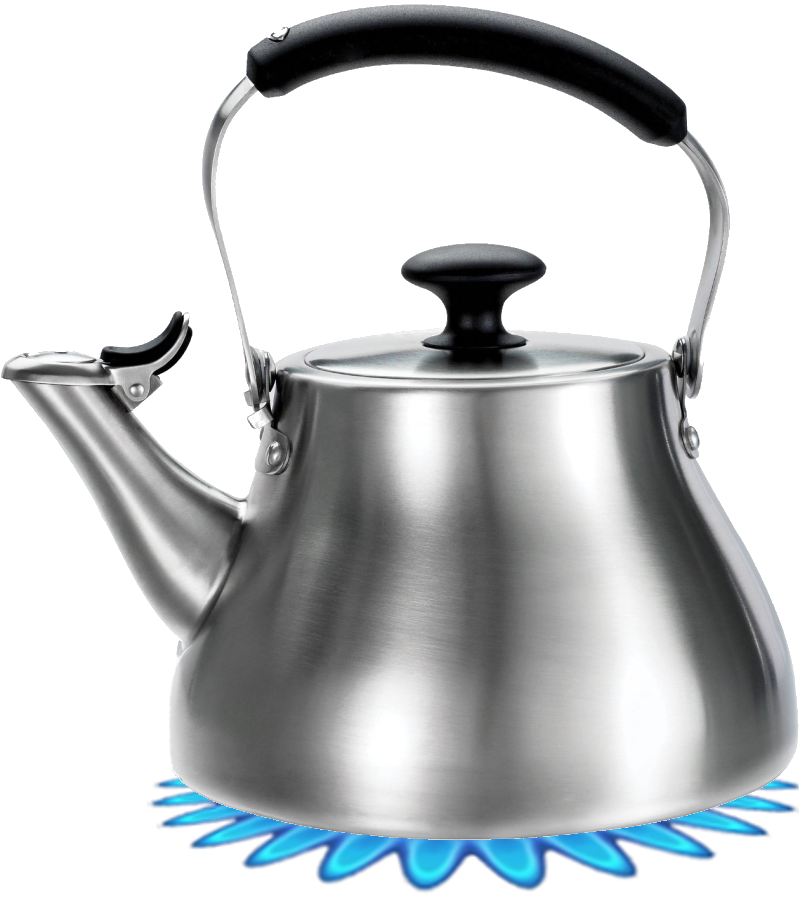
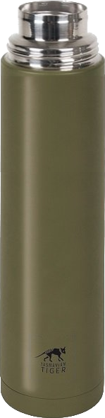

Nog 4 maanden
Water koken

Tijdens de opleiding moet je altijd vroeg opstaan, het is van belang dat je dit uit jezelf doet. Je moet zorgen dat je op tijd je tas hebt ingepakt met daarin een thermoskan met heet water.
In deze opdracht leer je hoelang je het water moet koken en dat je het water meteen in de thermoskan moet doen.
Gebruik bij deze oefening de knoppen om de waterketel te vullen en het water te koken, zodat er genoeg warm water in de thermoskan komt.
Succes !
02 : 30

02 : 30


02 : 30